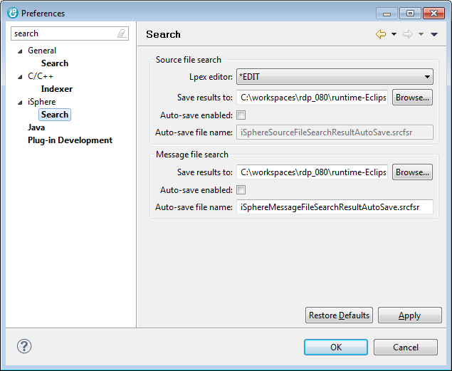

The available source file search options are:
| Lpex editor | - | Specifies whether the Lpex editor is started in browse or edit mode, when double-clicking a source member. |
| Save results to | - | Specifies the folder in which to save source file search results. |
| Auto-save enabled | - | Specifies if the content of the iSphere Source File Search view is automatically saved. |
| Auto-save file name | - | Specifies the file name where search results are saved. |
The available message file search options are:
| Save results to | - | Specifies the folder in which to save message file search results. |
| Auto-save enabled | - | Specifies if the content of the iSphere Message File Search view is automatically saved. |
| Auto-save file name | - | Specifies the file name where search results are saved. |